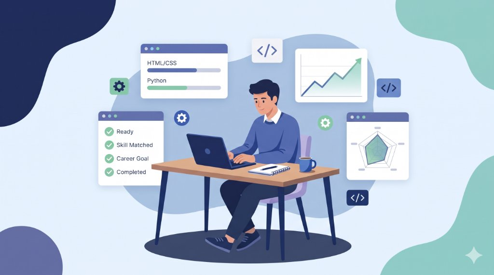

Career Readiness Tool
Understand Where You Stand Before You Apply
Compare the technical skills you already know against core requirements for entry-level tech roles. Find out your readiness score in seconds and see exactly which skills to learn next.
Start Analysis
Skill Gap Analyzer
Enter your details, choose a target career role, and tick the skills you can comfortably use.
Analysis Report for Student
Target Role: Frontend Developer
Skills You Have
Skills You Need to Learn
Career Roles Reference Guide
Core skills evaluated for each track along with trusted, free study platforms.
| Career Role | Core Required Skills | Recommended Free Resources |
|---|---|---|
| Frontend Developer | HTML, CSS, JavaScript, Responsive Design, Git | MDN Web Docs, freeCodeCamp, W3Schools HTML/CSS |
| Backend Developer | Node.js, Python, SQL, REST APIs, Git | freeCodeCamp Backend, W3Schools SQL, MDN Server-side |
| Data Analyst | Python, SQL, Excel, Statistics, Data Visualization | freeCodeCamp Data Analysis, W3Schools Python, W3Schools Excel |
About This Project
Student Skill Gap Analyzer helps undergraduate students bridge the gap between classroom coursework
and practical industry expectations. By matching self-assessed skills against five core competencies per role,
the tool calculates a transparent readiness score using (Matched Skills ÷ Total Role Skills) × 100
and highlights clear next steps for self-study.
Frequently Asked Questions
Quick answers about how the skill gap score works and how to plan your learning.
How is my Readiness Score calculated?
Your score divides the number of matched skills you ticked by the 5 core skills required for your selected role, then multiplies by 100. Extra skills from other tracks are great to know, though only the core skills for your chosen role count toward that score.
Which career role is best for beginners?
Frontend Developer is often the friendliest starting point because you can build and see visual web pages right away with HTML, CSS, and JavaScript. If you prefer working with numbers and spreadsheets, Data Analyst is also very approachable for beginners.
Do I need 100% of the skills to apply for an internship?
No—covering 60% to 80% of the core skills along with one or two honest, self-made projects is usually enough to start applying for student internships. Teams expect interns to keep learning on the job.
Are all the study links in the reference table free?
Yes, all recommended platforms in the table—MDN Web Docs, freeCodeCamp, and W3Schools—offer free tutorials and documentation without requiring a paid plan.